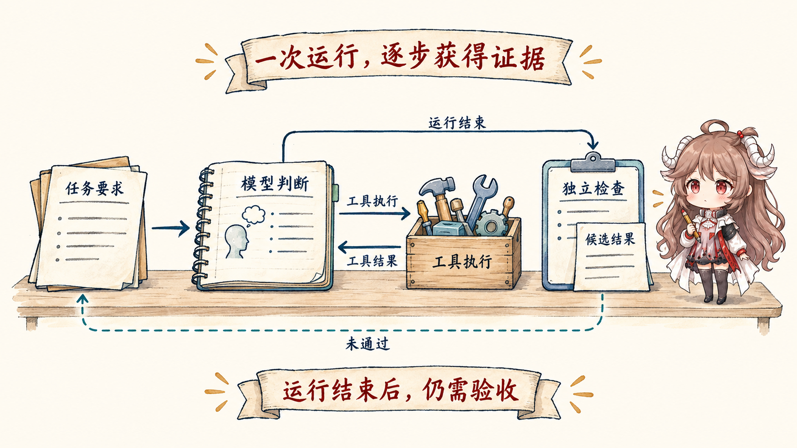
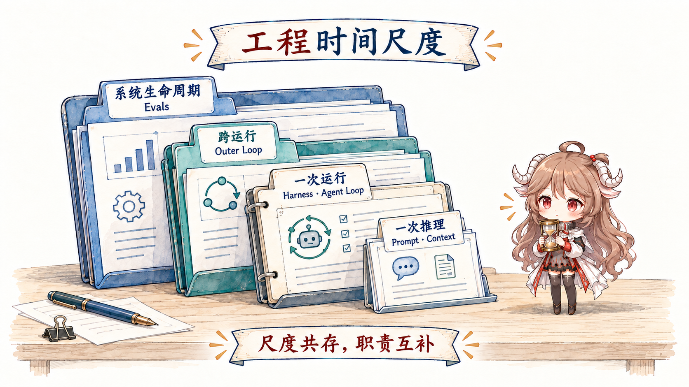
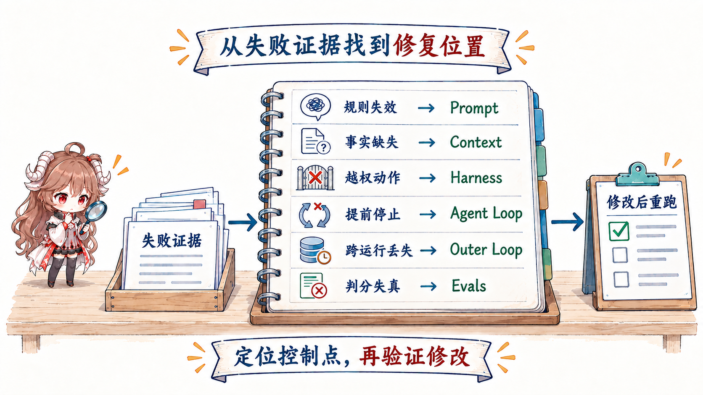

先约定一个最朴素的说法：本文中的 Agent，是“模型加上外层程序和工具”组成的工作系统。模型负责判断下一步，外层程序负责准备材料、执行真实动作并保存结果，工具则让它能够读文件、改代码和运行测试。
读完这篇，你应该能回答：模型需要知道什么？谁真正执行动作？为什么要重复多轮？一次运行结束后谁接手？谁确认工作已经完成？改动某一层后，又怎样证明系统真的变好？
资料说明：本文依据 OpenAI 与 Anthropic 的官方公开材料。厂商对 harness 等词的使用范围并不完全相同；文中采用便于学习和设计的本地定义。图和 JSON 只表示机制形状，不还原任何私有实现。
一、先沿一项任务建立完整直觉
1.1 跟着 Agent 完成一次任务
假设支付模块有一个测试失败了。我们给 Agent 的任务是：“找出原因，做最小修改，运行支付测试，并留下可审查的结果。”一条最普通的成功路径是：
- 系统先把任务要求交给模型。
- 系统再准备失败日志、相关代码和项目规则，让模型看到当前事实。
- 模型判断应该先读取哪个文件，或者提出运行哪条测试命令。
- 外层程序检查这个动作是否存在、参数是否有效、权限是否允许，然后才真正执行。
- 文件内容或测试结果返回给模型，成为它判断下一步的新依据。
- 模型继续读取、修改和验证，直到完成，或者明确说明为什么不能继续。
- 最后由测试、静态检查或 reviewer 独立确认结果，而不是只相信模型说“修好了”。

1.2 给沿途的六类问题命名
AI Engineering 不是先背一组英文名词，而是反复解决六个普通问题。每个问题都来自刚才那条任务路径。
1.2.1 怎样把要求说清楚？
目标是什么、不能改什么、什么结果才算完成、最后怎样报告——把这些默认期待写成清楚的工作说明，就是本系列所说的 Prompt engineering。
1.2.2 这一步应该让模型看到什么？
调查时需要失败日志，修改时需要相关代码，验证时需要当前 diff 和最新测试输出。为模型的下一次判断挑选材料，就是 Context engineering。
1.2.3 模型提出的动作怎样真正发生？
模型说“运行测试”只是一项建议。负责检查参数和权限、隔离执行环境、运行工具、保存日志的外层软件，就是 runtime harness。
1.2.4 为什么 Agent 能做一步再看一步？
外层程序不断让模型判断、执行动作、接收结果，再决定继续或停止。一次运行里的这个闭环叫 Agent Loop。
1.2.5 一次运行结束后，任务怎样继续？
任务可能因为时间、预算或等待人工而中断。负责保存进度、安排下一次运行、控制重试并防止重复工作的外层流程叫 Outer Loop。
1.2.6 谁来证明系统真的做对了？
测试、规则、模型评审或人工评审组成可重复的“考试”，用外部证据判断结果。这类机制统称 Evals。
如果只想建立入门地图，到这里已经掌握主线。后半篇把同一条故事换成工程设计语言，供需要评审系统边界、API 和故障归因的读者继续深入。
二、再把故事压缩成工程地图
2.1 把六类工作放回各自的时间尺度
把刚才的故事拉远看，会发现这些工作持续的时间并不相同：模型每次只判断一个下一步；读取、修改和测试会在一次运行里往返多轮；同一张任务卡可能经历多次运行；Evals 还要比较多个任务和不同系统版本。
工程上常给这些尺度起名字：一次模型调用叫 inference；一次“模型判断—工具执行—结果返回”叫 tool cycle；从 Agent 启动到完成或中止叫一次 run；跨多个 run 仍然存在的任务卡叫 work item。下面的表只是把已经讲过的六类工作压缩到这些尺度里。

| 工程表面 | 本系列的操作性定义 | 主要时间尺度 | 典型失败 |
|---|---|---|---|
| Prompt | 声明模型应遵循的行为契约：角色、目标、约束、优先级、输出和工具语义。 | 一次 inference 的行为边界 | 意图含糊、约束冲突、输出漂移 |
| Context | 某次模型调用实际可见、可依据的工作集。 | 每次 inference 重新装配 | 缺失、噪声、过期、位置失衡 |
| Runtime harness | 模型之外承载一次运行的执行环境与控制面。 | 一次 run | 副作用失控、状态断裂、不可恢复 |
| Agent loop | 在一次运行内重复“推理—行动—观察”，直到满足退出条件。 | 一次 run（可含多次 inference） | 过早停止、空转、预算耗尽 |
| Outer loop | 跨运行执行触发、选工、验证、持久化、重试与升级。 | 多次 run | 重复劳动、丢状态、重试风暴 |
| Evals | 把结果质量变成可重复测量的真值与反馈机制。 | 系统生命周期 | 把“说完成了”误当成完成 |
这张表还有一个更重要的工程结论：它们不是互斥的岗位。一个人可以同时修改 prompt、context policy 和 harness；但评审改动时必须说清楚改的是哪一层，否则“效果变好”无法归因，回归也无法定位。
2.2 同一条任务由谁负责哪一步
再沿七步故事问一次“谁说了算”：用户决定目标；运行时准备材料并守住工具关口；仓库和测试进程保存真实结果；持久化层让进度跨运行存在；评估器判断证据是否足以通过。工程上把“能够权威确认或改变这项状态的一方”叫 owner。同一类工程工作可能涉及多个 owner，所以模型很重要，却不是唯一的状态机。
2.2.1 用户目标先变成可验证的 done
“修一下测试”只给了方向，没有定义边界。允许改生产代码还是只改测试？必须跑哪些命令？网络是否可用？什么结果能交付给 reviewer？Prompt 层把这些要求写成行为契约；eval 层则把其中一部分变成机器或人工可以检查的结果。两者首尾呼应，却不是同一件事。
2.2.2 运行时把材料投影成一次模型调用
OpenAI 的官方 prompt engineering 指南把高层 instructions、消息角色、工具和输入都放在请求设计中讨论；Anthropic 的 context engineering 文章则强调，agent 每一步都会根据当前 context 决定下一次推理要带什么。一个便于思考的请求形状是：
{
"instructions": "Fix the failing payment test; do not change public APIs.",
"tools": ["read_file", "search", "apply_patch", "run_tests"],
"input": [
{ "type": "task", "text": "..." },
{ "type": "repo_facts", "ref": "selected working set" }
]
}仓库里可能保存了一万条事实，但只有被选择、序列化并放进当前请求的部分才属于本次 model-visible context。反过来，系统指令本身也占 context window；所以 prompt 是按职责切出的语义层，context 是按可见性切出的物理工作集，它们会重叠，却不能互换。
2.2.3 工具调用只是提案，Harness 才执行副作用
模型输出“运行测试”或一个 tool call，并没有让进程自动发生。Harness 要做 schema 校验、权限判断、沙箱执行、超时与取消、结果截断、事件记录，再把 observation 送回模型。这个边界决定了系统能否把不可信提案转成受控动作。
官方用法确实有宽窄差异。OpenAI 在 Harness engineering 一文里把 Codex harness 描述为核心 agent loop 和围绕它的工具/指令环境；Anthropic 在 Building and evaluating trustworthy agents 中更强调 instructions 与 guardrails 组成的 harness，在 Managed agents 又把 session、harness 和 sandbox 分开讨论。本系列采用较窄、方便设计评审的定义：runtime harness 是模型之外、单次运行之内的执行与控制面；loop 是其中驱动状态前进的控制流。
2.3 一次运行与长期任务处在不同层次
OpenAI 对 Codex agent loop 的公开拆解展示了一条单次运行主线：准备输入、调用模型、接收事件、执行工具、回填结果，直到模型完成或运行被中止。Anthropic 的 Building effective agents 也把 agent 概括为模型动态指导自己的过程和工具使用。这里说的是 inner loop。
但生产系统还要回答另一组问题：谁触发下一次运行？从队列里选哪项工作？上次执行留下了什么可恢复状态？验证失败后是重试、换策略还是交给人？这组跨运行控制就是本系列所说的 outer loop。
| 问题 | Inner / Agent loop | Outer loop |
|---|---|---|
| 输入从哪里来 | 当前任务与 observation | 事件、计划、队列或人工触发 |
| 状态存多久 | 一次 run 内的消息与工具结果 | 跨 run 的 checkpoint、work item 与审计记录 |
| 何时停止 | 完成、错误、预算或人工中止 | 目标达成、重试上限、时间窗或升级 |
| 主要风险 | 无限工具循环、错误 observation、过早 final | 重复触发、状态漂移、无人负责的失败 |
把两者揉成一个“loop”，常见后果是：inner loop 已经生成漂亮的完成报告，outer loop 却没有独立验证；或者 outer loop 不断把同一失败重新喂给 agent，却没有改变证据、策略或权限。重试只是重复，不等于学习。
三、用这张地图诊断真实系统
3.1 同一个失败，应该改哪一层
一个失败现象可能跨层传播，但修复应该尽量落在最接近根因的控制面。模型一直忽略固定约束，先查 prompt precedence；它不知道刚更新的接口，先查 context selection；它执行了越权命令，先查 harness gate；它找到正确修复却没有跑测试，查 loop termination；它声称测试通过而实际没有，查 evaluator 与结果证据。

3.1.1 用“最小控制面”修问题
- 若规则对所有任务都成立，把它放进稳定 instruction，而不是每次检索出来。
- 若事实会变化，让 context policy 选择最新事实，而不是把快照永久写进 prompt。
- 若动作可能造成副作用，用权限、沙箱和确定性校验控制，而不是请求模型“千万小心”。
- 若完成条件可执行，让 loop 或 evaluator 真的执行检查，而不是让模型自我报告。
- 若失败跨运行累积，把 checkpoint、重试预算和升级责任交给 outer loop。
3.2 回到真实 Coding Agent
这套地图不是悬在具体产品之上。我们已经拆过的三套 coding agent，正好提供不同实现切片：
| 工程问题 | 可以继续看的本站材料 | 观察重点 |
|---|---|---|
| 一次任务怎样进入模型—工具循环 | Codex 运行主线、Claude Code 运行主线 | 请求装配、事件流、tool result 回填 |
| 模型每轮实际看到什么 | Codex 上下文、Claude Code 上下文 | history、投影、压缩与持久化的区别 |
| 副作用在哪里被收口 | Codex 权限与沙箱、Claude Code 权限 | 提案、校验、审批、执行、observation |
| 长任务怎样恢复 | Transcript 与恢复、Hermes 运行闭环 | 持久化事实与下一轮可见工作集 |
源码能让抽象概念落地，但不能替代系统级定义。接下来的文章会继续保持这条证据边界：官方资料负责公开契约；涉及具体实现时，再由开源或公开镜像代码提供实现形状；我们自己的图只负责解释两者之间的机制。
3.3 改对一层以后，还要回到同一条证据链
定位根因只是开始。假设支付任务因为“测试结果没有进入下一轮 Context”而失败，团队修改了 Context selection。此时不能用一句“召回率更高”宣布完成；要把同一任务放回可比较环境，确认新测试结果确实进入 model view、Agent 因此选择了正确下一步，并且其他任务没有退化。
- 先执行：固定任务起点、模型、工具、权限和预算，记录旧版结果与 trace。
- 再定位：用 evidence 判断是哪一层拥有失败原因，而不是凭直觉改 Prompt。
- 只改一个主要 owner：例如 Context 选择策略，并记录预期改变的可观察事实。
- 在可比较条件下重跑：检查目标失败是否消失、相邻能力是否回归、成本和延迟是否仍可接受。
- 最后才采用：验证通过说明候选可发布；灰度、回滚条件和采用权限仍由交付流程决定。
因此，AI Engineering 的完整动作不是“发现问题 → 加一条规则”，而是执行 → 观察 → 定位 owner → 修改 → 重跑 → 只保留被证据支持的改进。最后一篇会把这条闭环做成可重复的 Evals。
四、复盘：用六个问题重画完整系统
| 如果你正在决定…… | 先问…… | 主要落点 |
|---|---|---|
| 怎样让模型稳定遵循要求 | 行为契约、优先级和输出边界是否明确？ | Prompt |
| 这一轮该带哪些事实 | 哪些信息相关、最新、可信且值得占预算？ | Context |
| 动作能不能安全发生 | 谁校验、谁授权、在哪里执行、如何恢复？ | Harness |
| 一次运行怎样收敛 | observation 是否可靠，停止与预算条件是什么？ | Agent loop |
| 多次运行怎样接力 | 触发、checkpoint、验证、重试与人工升级归谁？ | Outer loop |
| 我们凭什么说系统变好了 | 结果真值、失败分类与回归集在哪里？ | Evals |
所以，这个系列不是宣布 prompt engineering 已经过时，而是把它放回正确位置。下一篇从最靠近模型行为的表面开始：怎样把 Prompt 从一次性话术变成版本化的行为接口。